Key Takeaways
- Skips Microsoft’s safeguard holds and allows devices to receive Windows feature updates immediately.
- Does not fix compatibility issues; it only removes Microsoft’s protective update block.
- May expose devices to known problems such as driver incompatibility, application failures, or system instability.
- Best suited for testing or pilot deployments, not for broad production use.
- Use with caution, as devices may experience issues that Microsoft intended to prevent until a fix becomes available.
Hey, let’s learn about Bypass Microsoft’s Safeguard Protection for Feature Updates using Intune. This policy setting specifies that a Windows Update for Business device should skip safeguards. Safeguard holds prevent a device with a known compatibility issue from being offered a new OS version. Since safeguards aim to protect the device and user from a failed or poor upgrade experience, IT admins can use this policy to opt devices out of safeguard protections when necessary.
Table of Contents
What are the Advantages of this Policy?
Disabling WUfB Safeguards allows Windows Update for Business devices to skip safeguard holds and receive feature updates.
1. Receives feature updates without waiting for safeguard holds to be removed.
2. Helps IT administrators validate updates on managed devices.
3. Gives administrators greater control over the feature update deployment process.
Bypass Microsoft’s Safeguard Protection for Feature Updates using Intune
The Disable WUfB Safeguards policy allows Windows Update for Business devices to bypass safeguard holds during feature updates. It gives IT administrators control over deploying updates even when compatibility safeguards exist.
Note: This policy is intended primarily for testing or pilot deployments. Avoid enabling it for all production devices unless you have validated that the feature update is compatible with your environment.
Creating the Policy
The first step to create the policy is to sign in to the Microsoft Intune Admin Centre. Then click on the Devices and choose Configuration under the managed devices option. Click on the Create down arrow and select New Policy.

How to Create the Profile
To create a policy, you must specify the Platform and Profile type. After clicking the new policy, which is mentioned in the above step, a profile creation box will show up, in which you can enter the platform and profile type. Here, I selected the Platform as Windows 10 and later, and Profile type as Settings catalog.

Basics Tab for Naming the Policy
Naming the policy is a mandatory step while creating the policy. Hence, you can identify the policy later by its Name. In this basics tab, you can add a name and description. Adding Name is necessary, but giving a Description is not important. Here, I gave the policy name as Disable WUFB safeguards and Description as “This policy setting specifies that a Windows Update for Business device should skip safeguards”.
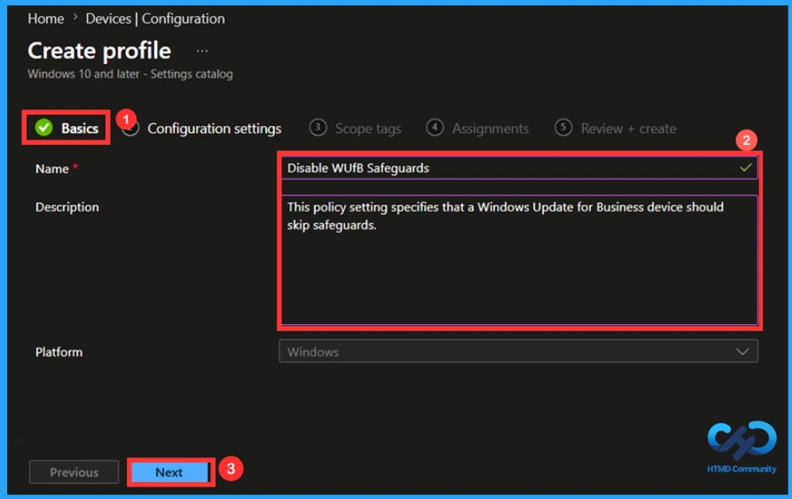
Configuration Tab to Add the policy
You are able to add the policy in this Configuration tab. To add the policy in this configuration tab, click on the Add Settings and choose the respective policy from the settings picker. There are many policies in this settings picker. Choose the one that you need to create. Here, I searched for the policy name disable WUFB safeguards and clicked on the policy category (Windows update for business) and enabled the settings name.
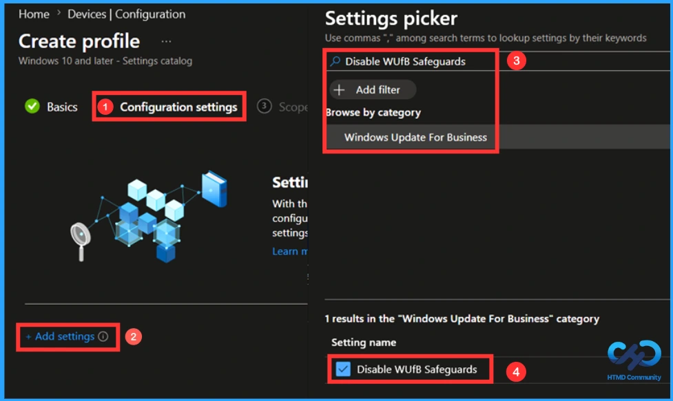
Default Setting in this Policy
By default, safeguard hold protection is enabled for devices receiving Windows feature updates. Devices with known compatibility issues are blocked from upgrading until the safeguard is cleared to prevent poor upgrade experiences. The safeguard holds protection is provided by default to all the devices trying to update to a new Windows 11 Feature Update version via Windows Update.
- By default, Safeguards are enabled and devices may be blocked for upgrades until the safeguard is cleared is selected.
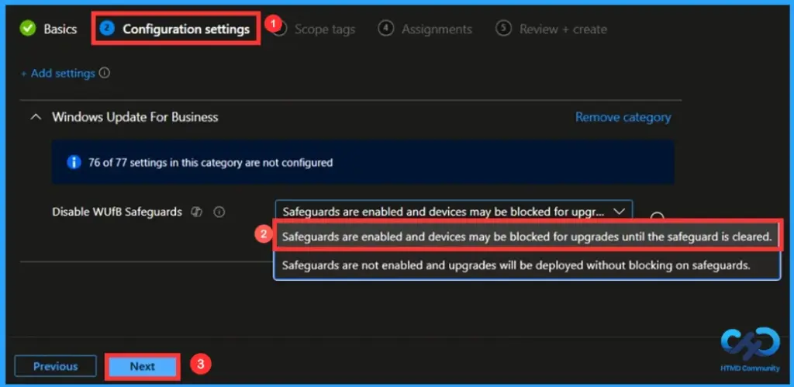
Disabling this Policy
Safeguards are disabled, allowing feature updates to be deployed without safeguard blocks. It gives IT administrators greater control over update deployment and supports early testing and validation of feature updates.
- For Disabling the policy, I selected the Safeguards are not enabled and upgrades will be deployed without blocking on safeguards.
- Then click on the Next.
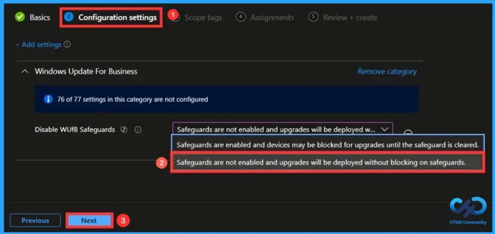
Scope Tags are used to control the visibility and access. It limits the visibility to administrators. Adding a scope tag is not a mandatory step, you can add it if you want using the Select Scope Tags option. Since it is not mandatory, I skipped this step. Click on Next to continue.
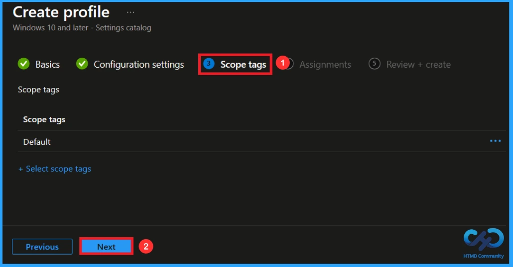
Assignment Tab to Add Group
Assignment tab helps you to add a group to this policy so that those who are chosen will be enabled to access this policy. You can add the group either by including or excluding a particular group. Here I added the group using the included group option. Click on the Add group and choose a group from the list of groups. Here, I have selected HTMD – Test Policy. Click Next to continue.

Finalising the Policy
The final step to create the policy is reviewing. You can view the summary of the policy at the Review+Create tab. You can make any changes while reviewing by clicking the Previous option. After making the necessary changes, click on Create, and a notification will pop up and show that your policy has been created successfully.
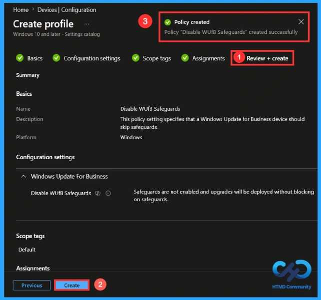
Monitoring Status of the Policy
Monitoring the status of the policy helps to analyse whether the policy has succeeded or not, or if any errors appeared in this policy. If this policy has succeeded, then the value of the succeeded changes from 0 to 1. You can quickly get the succeeded value 1 by using the manual sync option in the Company Portal. After this, go to the Devices>Configuration in the Intune portal and search for the name of the policy.
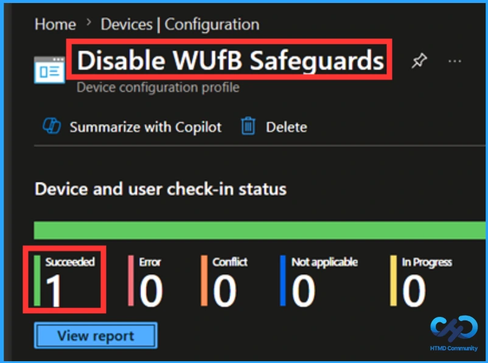
Client-Side Verification
To confirm if a policy has been applied, use the Event Viewer on the client device. Go to Applications and Services Logs > Microsoft >Windows >Device Management > Enterprise Diagnostic Provider > Admin. From the list of policies, use the Filter Current Log option and search for Intune event 813.
MDM PolicyManager: Set policy int, Policy: (DisableWUfBSafequards), Area: (Update),
EnrollmentID requesting merge: (EB427D85-802F-46D9-A3E2-D5B414587F63), Current User:
(Device), Int: (0x1), Enrollment Type: (0x6), Scope: (0x0).
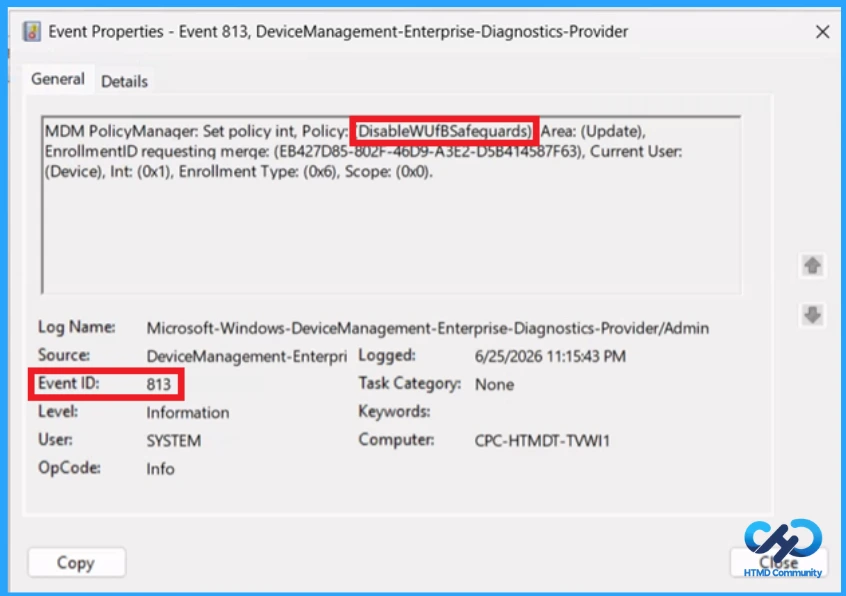
Configuration Service Provider (CSP)
The Policy Configuration Service Provider (CSP) is a feature used by organisations to manage and control settings on Windows 10 and 11 devices. It explains what each policy does, what settings or values can be used, and how it connects to older Group Policy settings (Group Policy Mapping details).
Description framework properties:
| Property name | Property value |
|---|---|
| Format | int |
| Access Type | Add, Delete, Get, Replace |
| Default Value | 0 |
Allowed values:
- 0 (Default) – Safeguards are enabled and devices may be blocked for upgrades until the safeguard is cleared
- 1 – Safeguards aren’t enabled and upgrades will be deployed without blocking on safeguards.
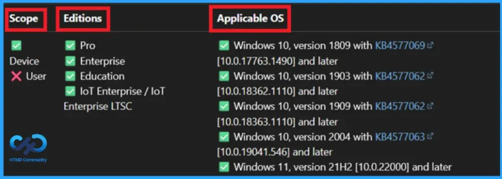
How to Remove an Assigned Group from this Policy
To remove an assigned group from a policy, search for the policy name Disable WUfB Safeguards first and click on its Assignment Tab. Then you will see the Remove option on the right side of the assigned group. Click on the Remove and select the Review+Save option otherwise, the changes you will not be saved.
For detailed information, you can refer to our previous post – Learn How to Delete or Remove App Assignment from Intune using by Step-by-Step Guide.
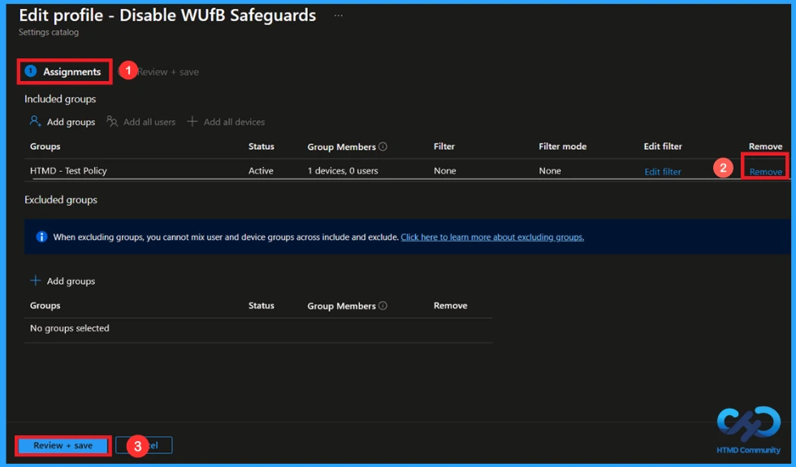
How to Delete this Policy from Intune Portal
To delete a policy from the Intune portal, go to Devices > Configuration, search for the policy name (Disable WUfB Safeguards), and at the end, you can see a 3-dot menu. By clicking, you can see a list of 3 options, click the Delete option, and a notification confirms that your policy has been deleted.
For more information, you can refer to our previous post – How to Delete Allow Clipboard History Policy in Intune Step by Step Guide.
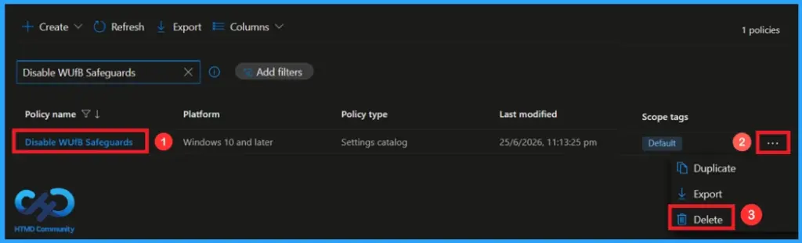
Need Further Assistance or Have Technical Questions?
Join the LinkedIn Page and Telegram group to get the latest step-by-step guides and news updates. Join our Meetup Page to participate in User group meetings. Also, Join the WhatsApp Community and WhatsApp Channel to get the latest news on Microsoft Technologies. We are there on Reddit as well.
Author
Anoop C Nair has been Microsoft MVP from 2015 onwards for 10 consecutive years! He is a Workplace Solution Architect with more than 22+ years of experience in Workplace technologies. He is also a Blogger, Speaker, and Local User Group Community leader. His primary focus is on Device Management technologies like SCCM and Intune. He writes about technologies like Intune, SCCM, Windows, Cloud PC, Windows, Entra, Microsoft Security, Career, etc.